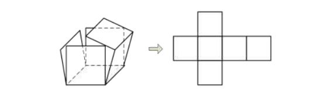
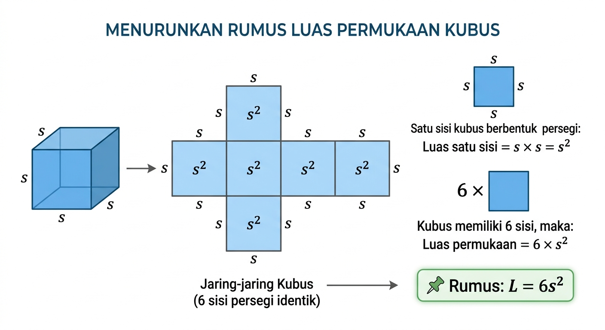

Memahami luas dari jaring kubus
Ingat jaring kubus? Jika kubus dibuka, kita akan mendapatkan 6 persegi.
Nah, luas permukaan kubus adalah jumlah seluruh luas persegi tersebut.

Satu sisi kubus berbentuk persegi:
Luas satu sisi = s × s = s²
Kubus memiliki 6 sisi, maka:
Luas permukaan = 6 × s²

Diketahui panjang rusuk kubus = 4 cm
Luas permukaan = 6 × 4²
= 6 × 16
= 96 cm²
Jika panjang rusuk kubus = 5 cm, berapa luas permukaannya?